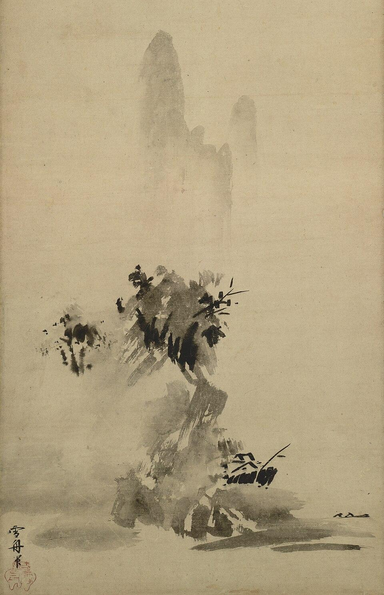
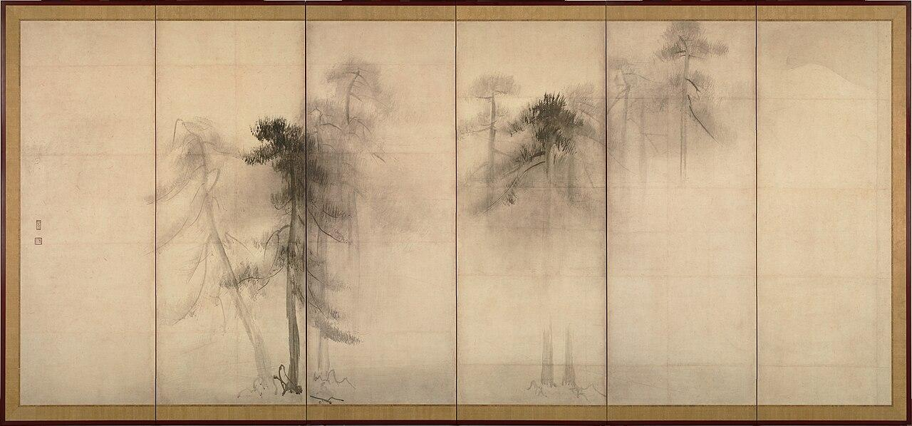
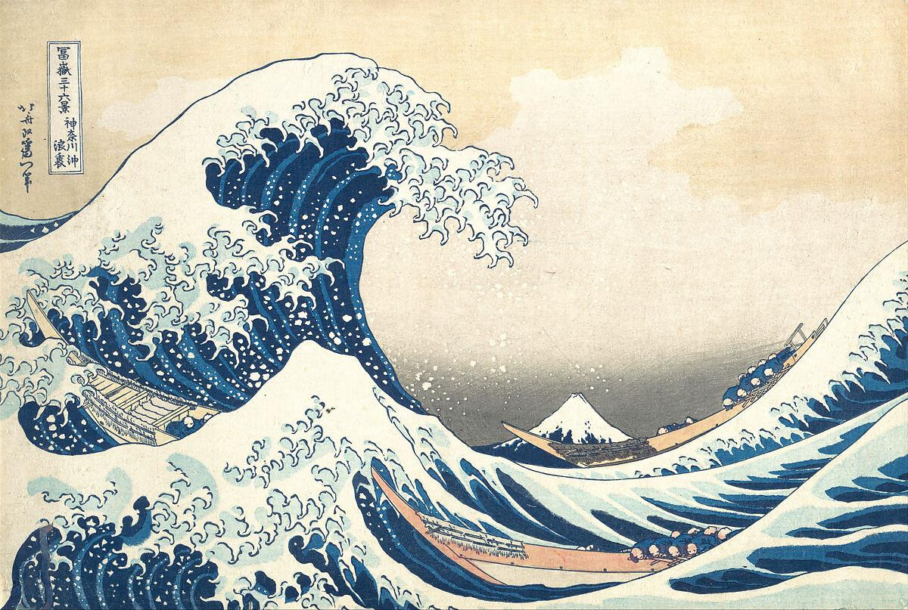
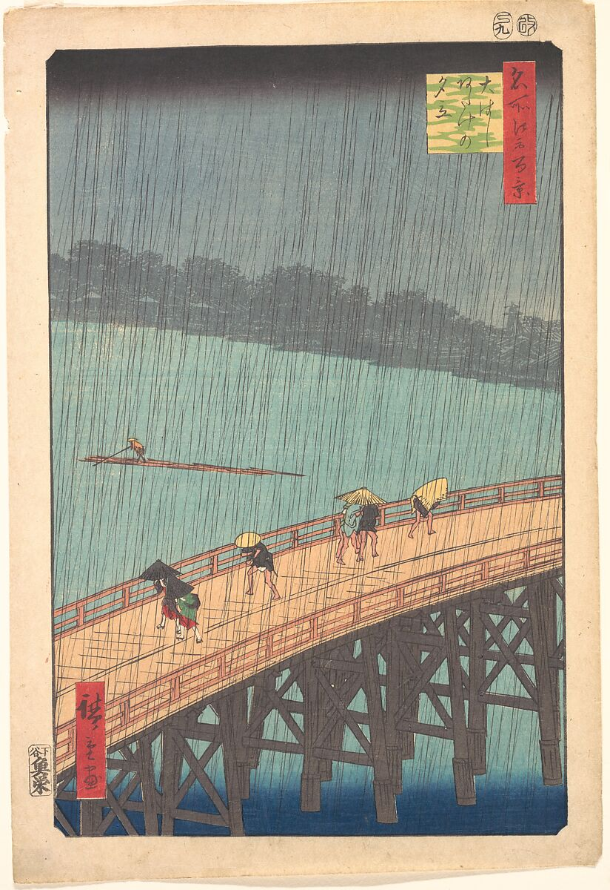
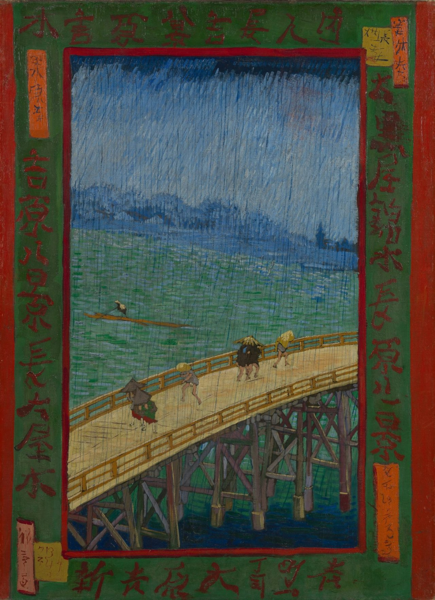
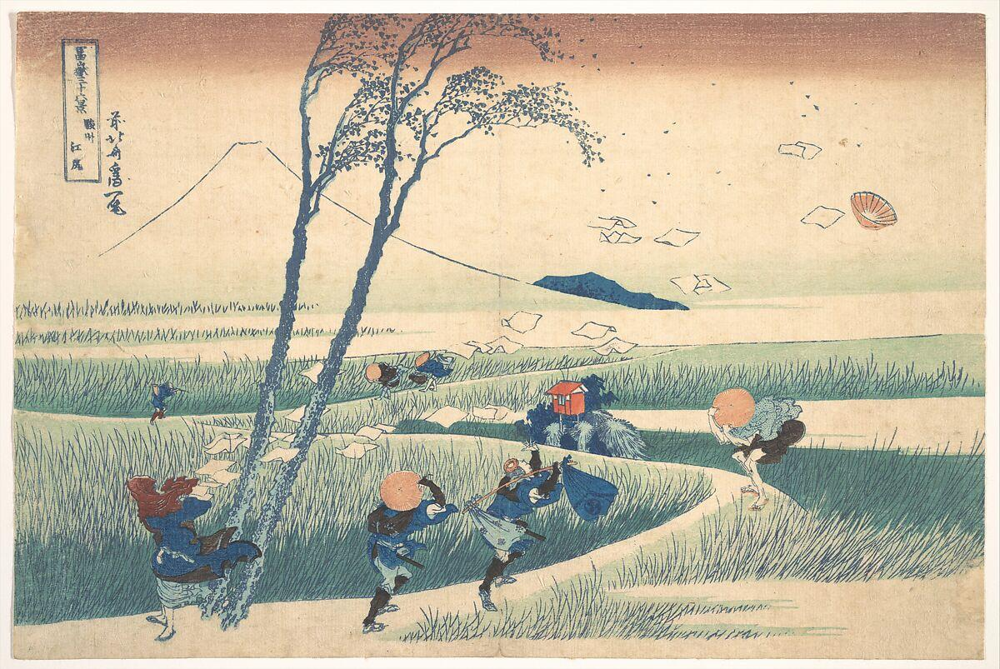

KIJK NU! / Door de tijd, vanaf 1495
Japanse meesters en hun echo
Sesshu, Tohaku, Hokusai en Hiroshige, en wat Van Gogh en Jeff Wall van hen leerden
Waar en wanneer
- Wanneer
- Van 1495 tot vandaag
- Waar
- Japan, daarna Parijs en Vancouver
- Prehistorietot 3000 v.C.
- Oudheid3000 v.C.-500
- Middeleeuwen500-1400
- Renaissance1400-1600
- Barok1600-1715
- Rococo1715-1780
- Neoclassicisme en romantiek1780-1850
- Modernisme1850-1915
- Avant-gardes1915-1945
- Na de oorlog1945-1980
- Hedendaags1980-nu
hier hoort dit hoofdstuk thuishier verwijst het naar
- 1495Sesshu Toyo, Landschap in gebroken inkt
- eind 16de eeuwHasegawa Tohaku, Pijnbomen
- 1603-1868Edotijd: Japan leeft in vrede en sluit zich af van het buitenland
- ca. 1830-1832Katsushika Hokusai, De grote golf bij Kanagawa
- 1853Een Amerikaanse vloot dwingt Japan zijn havens te openen
- 1857Utagawa Hiroshige, Plotse regenbui boven de Ohashi-brug
- 1867Japan heeft een eigen paviljoen op de wereldtentoonstelling in Parijs
- 1887Vincent van Gogh schildert Brug in de regen, naar Hiroshige
- 1993Jeff Wall, A Sudden Gust of Wind (after Hokusai)
kunstwerken en teksten uit dit hoofdstukwat er in de wereld gebeurde
Uit dezelfde tijd: De epoché en de ekphrasis, Iconografie en iconologie, Neoclassicisme, Romantiek, Modernisme, Marcel Duchamp, Immanuel Kant.
De namen in de strook komen uit de westerse kunstgeschiedenis. In Japan heten deze eeuwen de Muromachi-, de Momoyama- en de Edotijd.
In 1887 zit Vincent van Gogh in Parijs voor een Japanse prent van een brug in de regen. Hij legt er een raster over en schildert ze na, streek voor streek, in olieverf. Ruim een eeuw later zet de Canadese fotograaf Jeff Wall bij Vancouver vier acteurs in een winderig veld en bouwt hij met de computer een andere Japanse prent na, op een formaat van bijna vier meter breed.
Twee westerse kunstenaars, twee totaal verschillende technieken, en telkens hetzelfde gebaar: kijken naar een Japans beeld en er iets nieuws mee maken. In dit hoofdstuk leer je eerst de Japanse meesters zelf kennen, op hun eigen voorwaarden. Daarna volg je wat er met hun beelden gebeurde toen ze in Europa aankwamen, en wat kunstenaars er vandaag nog mee doen. Zo sluit dit hoofdstuk aan bij het hoofdstuk over het modernisme.
1 Anders kijken
Een Europees schilderij uit de zeventiende eeuw is een venster. De lijst is het kozijn, het lineair perspectief trekt je blik de diepte in, licht en schaduw maken de dingen rond en tastbaar. Je kent dat van Caravaggio. De Japanse beeldtraditie vertrekt van andere afspraken. Wie ze niet kent, vindt de beelden vlak of onaf. Wie ze kent, ziet keuzes.
- De leegte doet mee. Een groot deel van het blad blijft onbeschilderd. Dat wit is geen achtergrond die nog ingevuld moet worden, maar mist, water, lucht of stilte.
- Geen venster, maar een vlak. Er is geen verdwijnpunt en geen slagschaduw. Diepte ontstaat door dingen boven elkaar te plaatsen, of door ze te laten vervagen.
- De lijn draagt het beeld. Vormen worden met een contour getekend en met egale kleur gevuld, zonder overgangen van licht naar donker.
- Asymmetrie. Het belangrijkste staat zelden in het midden. Een tak komt van opzij het beeld in, een figuur wordt door de rand afgesneden.
- Het ogenblik. Regen, wind, mist, bloesem die valt: geliefd is wat net voorbijgaat.
Ook de dragers zijn anders. Een Japans schilderij hangt niet permanent aan de muur. Het is een rol die je ophangt voor een gelegenheid en weer opbergt, een handrol die je van rechts naar links afrolt, of een kamerscherm dat een ruimte verdeelt. Daarom lees je deze beelden van rechts naar links.
2 Inkt en leegte
De oudste traditie in dit hoofdstuk is de inktschilderkunst. Ze kwam in de dertiende en veertiende eeuw met het zenboeddhisme uit China naar Japan. De schilders waren vaak monniken. Ze werkten met zwarte inkt, water, een penseel en papier of zijde, en met niets anders. Een streek inkt op papier kan je niet verbeteren of wegvegen. Elke aarzeling blijft zichtbaar. De kunst bestaat erin met zo weinig mogelijk streken zo veel mogelijk op te roepen.
2.1 Sesshu Toyo, Landschap in gebroken inkt


Nationaal Museum van Tokio. Hangrol, inkt op papier. Foto via Wikimedia Commons.
Publiek domein. Afbeelding via Wikimedia Commons
- Jaar
- 1495
- Techniek
- Hangrol, inkt op papier
- Afmetingen
- 148,6 x 32,7 cm
- Bewaarplaats
- Nationaal Museum van Tokio (Nationale Schat)
Wat zie je?
Een smal, hoog blad. Onderaan staan enkele donkere, natte vegen inkt, met daarboven lichtere vlekken die in het papier uitvloeien. Bovenaan staan regels schrift. Wie langer kijkt, begint te herkennen: de donkere vegen worden bomen en rotsen aan een oever, een paar rechte streepjes een dak, twee haaltjes op het water een bootje. De bleke vlekken erachter zijn bergen in de mist. Meer dan de helft van het beeld is leeg.
Hoe is het gemaakt?
Sesshu (1420-1506) was een zenmonnik en geldt als de grootste Japanse inktschilder. Hij had in China gestudeerd. Dit werk schilderde hij op zijn zesenzeventigste voor een leerling die na jaren studie naar huis terugkeerde, als een soort getuigschrift. Dat schrijft hij zelf in de tekst bovenaan. Daarboven staan gedichten van zes monniken uit Kyoto.
De techniek heet gespatte of gebroken inkt. De schilder tekent geen contouren. Hij zet eerst natte, bleke vlekken en plaatst daarin, terwijl het papier nog vochtig is, enkele donkere accenten. Het lijkt achteloos, maar het museum wijst erop dat het beeld een stevige opbouw heeft: de donkere massa onderaan draagt de lichte bergen erboven.
Betekenis
Het landschap bestaat nergens. Het is geen plek die Sesshu gezien heeft, maar een landschap dat ontstaat terwijl je kijkt. De schilder geeft net genoeg, en de kijker maakt het af. Dat past bij zen, waar inzicht niet uitgelegd kan worden maar door de leerling zelf gevonden moet worden. Een meester die zijn leerling dit meegeeft, zegt: de rest moet je zelf doen.
2.2 Hasegawa Tohaku, Pijnbomen


Nationaal Museum van Tokio. Kamerscherm, inkt op papier. Foto via Wikimedia Commons.
Publiek domein. Afbeelding via Wikimedia Commons
- Datering
- Einde zestiende eeuw
- Techniek
- Twee kamerschermen van elk zes panelen, inkt op papier
- Afmetingen
- Elk scherm 156,8 x 356 cm
- Bewaarplaats
- Nationaal Museum van Tokio (Nationale Schat)
Wat zie je?
Enkele groepen pijnbomen staan in een dichte mist. De voorste zijn met donkere, ruwe streken gezet, de achterste zijn zo bleek dat ze bijna in het papier verdwijnen. Tussen de groepen is niets: geen grond, geen horizon, geen lucht. In de verte is vaag de top van een besneeuwde berg te zien. De schermen zijn samen meer dan zeven meter breed, en het grootste deel daarvan is leeg papier.
De leegte als onderwerp
Tohaku (1539-1610) werkte in een tijd van burgeroorlog en van pronkzucht. Zijn rivalen beschilderden de kastelen van de krijgsheren met reusachtige bomen op een achtergrond van bladgoud. Dit werk doet het omgekeerde. Het toont geen bomen, maar de mist ertussen. Het lege papier is hier geen ontbrekende achtergrond, het is vochtige, koude lucht. Wie voor de schermen staat, heeft het gevoel zelf in het bos te lopen en de bomen een voor een te zien opdoemen.
Over het werk bestaan vragen waar niemand het antwoord op kent. De vellen papier zijn onregelmatig aan elkaar gezet en de zegels zijn later aangebracht. Sommige onderzoekers denken daarom dat het een voorstudie was voor een groter werk, die pas later tot schermen is gemaakt. De inkt is dan weer van de allerbeste kwaliteit. Het museum laat de vraag open.
Betekenis
In het Japans bestaat een woord voor de ruimte tussen de dingen: ma. Het betekent tussenruimte of pauze, zoals de stilte tussen twee noten. In Pijnbomen is die tussenruimte belangrijker dan de dingen zelf. Onthoud dit beeld. Je komt de leegte verderop in dit hoofdstuk opnieuw tegen, in de fotografie.
3 Beelden van de vlietende wereld
Twee eeuwen later ziet Japan er anders uit. Het land is in vrede, afgesloten van het buitenland, en Edo, het huidige Tokio, is een van de grootste steden ter wereld. Een nieuwe klasse van kooplui en ambachtslieden heeft geld en vrije tijd. Ze gaat naar het kabukitheater, naar het worstelen en naar de vermaakwijk. Die wereld van voorbijgaand plezier heet ukiyo, de vlietende wereld. De beelden ervan heten ukiyo-e.
Ukiyo-e zijn kleurenhoutsneden: geen unieke kunstwerken voor een tempel of een kasteel, maar prenten in honderden exemplaren, te koop voor de prijs van een maaltijd. Aan elke prent werkten vier mensen. De uitgever betaalde en bepaalde het onderwerp. De ontwerper maakte de tekening. De blokkensnijder sneed ze uit in kersenhout, met een apart blok voor elke kleur. De drukker bracht de kleuren een voor een op het papier. Alleen de naam van de ontwerper kennen we meestal nog.
3.1 Katsushika Hokusai, De grote golf bij Kanagawa


The Metropolitan Museum of Art, New York. Kleurenhoutsnede uit de reeks Zesendertig gezichten op de berg Fuji.
Publiek domein. Afbeelding: The Metropolitan Museum of Art, Open Access
- Jaar
- Ca. 1830-1832
- Techniek
- Kleurenhoutsnede, inkt en kleur op papier
- Afmetingen
- 25,7 x 37,9 cm
- Reeks
- Zesendertig gezichten op de berg Fuji
- Bewaarplaats
- Onder meer The Metropolitan Museum of Art, New York
Wat zie je?
Een reusachtige golf rijst links op en krult naar rechts. De schuimkop valt uiteen in tientallen kleine klauwen. Onder de golf liggen drie smalle boten, met roeiers die zich plat tegen de riemen drukken. In het dal van de golf, klein en ver, staat een berg met een witte top. De hemel is leeg en bleek. Het beeld is opgebouwd uit drie tinten blauw, wit, een beetje geel en grijs.
Hoe is het gemaakt?
Hokusai (1760-1849) was rond de zeventig toen hij aan de reeks begon. Het echte onderwerp is niet de golf maar de berg: de Fuji, de heilige berg van Japan, telkens vanuit een andere plaats gezien. Hier speelt Hokusai met de afstand. De golf is dichtbij en dus enorm, de berg is ver en dus klein, en de schuimvlokken vallen als sneeuw op zijn top.
Twee dingen in deze prent komen uit Europa. Het diepe blauw is Pruisisch blauw, een kunstmatige kleurstof die pas kort in Japan werd ingevoerd en waarmee de uitgever de reeks aanprees. En de lage horizon met de kleine berg in de verte verraadt dat Hokusai het westerse perspectief kende, van Hollandse prenten die via de handelspost in Nagasaki het land binnenkwamen. Het beroemdste Japanse beeld is dus zelf al een ontmoeting tussen Oost en West.
Betekenis
Een Europese kijker leest van links naar rechts en volgt de golf. Een Japanse kijker leest van rechts naar links: hij vaart met de boten mee, de golf tegemoet. De prent toont het ogenblik net voor de klap. De berg, die niet beweegt, en de golf, die over een seconde verdwenen is, staan in één beeld: het blijvende en het voorbijgaande.
3.2 Utagawa Hiroshige, Plotse regenbui boven de Ohashi-brug


The Metropolitan Museum of Art, New York. Kleurenhoutsnede uit de reeks Honderd beroemde gezichten op Edo.
Publiek domein. Afbeelding: The Metropolitan Museum of Art, Open Access
- Jaar
- 1857
- Techniek
- Kleurenhoutsnede, inkt en kleur op papier
- Afmetingen
- 34 x 24,1 cm
- Reeks
- Honderd beroemde gezichten op Edo
- Bewaarplaats
- Onder meer The Metropolitan Museum of Art, New York
Wat zie je?
Je kijkt van hoog neer op een houten brug die schuin door het beeld loopt. Zes kleine figuren haasten zich erover, gebogen onder hoeden, een strooien mat en een paraplu. Op de rivier duwt een man een vlot voort. De overkant is een grijze schim. De hele prent is bedekt met fijne, donkere lijnen die schuin naar beneden lopen, in twee richtingen die elkaar kruisen. Bovenaan hangt een zwarte band.
Hoe is het gemaakt?
Hiroshige (1797-1858) was de grote landschapskunstenaar van de houtsnede. Deze prent komt uit zijn laatste reeks. De regen is het moeilijkste deel: honderden haarfijne lijnen die de blokkensnijder een voor een moest laten staan, op twee aparte blokken, zodat ze elkaar als een net kruisen. De zwarte wolk bovenaan en het donkere water zijn met de hand op het blok uitgeveegd, zodat de kleur verloopt. Geen twee afdrukken zijn daardoor helemaal gelijk.
Betekenis
Er gebeurt niets belangrijks. Geen held, geen verhaal, geen beroemd gebouw: alleen mensen die nat worden. Hiroshige maakt het weer tot onderwerp, en het gevoel dat iedereen kent als een bui losbarst. Let op de middelen: de hoge blik, de diagonaal van de brug tegen de diagonaal van de oever, de figuren klein en zonder gezicht, de egale kleurvlakken. Het zijn net die middelen die dertig jaar later een Nederlander in Parijs zullen treffen.
4 Japan in Parijs
Meer dan twee eeuwen lang liet Japan bijna geen buitenlanders toe. Alleen de Nederlanders mochten handel drijven, vanaf één klein eiland in de haven van Nagasaki. In 1853 dwong een Amerikaanse vloot het land zijn havens te openen. Kort daarna stroomden Japanse voorwerpen naar Europa: lakwerk, waaiers, keramiek, en prenten bij duizenden. Op de wereldtentoonstelling van 1867 in Parijs had Japan voor het eerst een eigen paviljoen. In 1872 kreeg de rage een naam: japonisme.
Voor de jonge schilders in Parijs kwamen de prenten op het juiste moment. Ze zochten een uitweg uit de regels van de academie, en hier lag een beeldtaal die al die regels negeerde en toch werkte. Manet schilderde een Japanse prent en een kamerscherm in de achtergrond van zijn portret van Emile Zola. Degas sneed zijn figuren af met de rand van het doek, zoals in de prenten. Monet verzamelde er meer dan tweehonderd en legde in zijn tuin een Japanse brug aan. Toulouse-Lautrec bouwde zijn affiches op uit egale vlakken en zwarte contouren. Niemand ging er zo ver in als Van Gogh.
4.1 Vincent van Gogh, Brug in de regen (naar Hiroshige)


Van Gogh Museum, Amsterdam (Vincent van Gogh Stichting). Olieverf op doek.
Publiek domein. Afbeelding: Van Gogh Museum, Amsterdam (Vincent van Gogh Stichting)
- Jaar
- 1887
- Plaats
- Parijs
- Techniek
- Olieverf op doek
- Afmetingen
- 73 x 54 cm
- Bewaarplaats
- Van Gogh Museum, Amsterdam
Wat zie je?
Dezelfde brug, dezelfde zes figuren, dezelfde man op zijn vlot. Maar de kleuren zijn feller: het water is groen en blauw, de brug geel, de hemel bijna zwart. De regen is geen net van haarlijnen meer, maar bestaat uit dikke streken verf. Rond het beeld loopt een brede groene rand met rode Japanse schrifttekens.
Hoe is het gemaakt?
Van Gogh en zijn broer Theo kochten in Parijs ongeveer 660 Japanse prenten, voor weinig geld. Vincent hing ze in zijn atelier, organiseerde er een tentoonstelling mee in een café, en kopieerde er drie in olieverf. Hij trok de omtrekken van de prent over met een raster en vergrootte ze op het doek. Omdat zijn doek een andere verhouding had dan de prent, bleef er een rand over. Die vulde hij met schrifttekens die hij van andere prenten overnam. Hij kon ze niet lezen. Ze hebben met de voorstelling niets te maken.
| Hiroshige (1857) | Van Gogh (1887) | |
|---|---|---|
| Techniek | Kleurenhoutsnede, oplage van honderden | Olieverf op doek, één exemplaar |
| Formaat | 34 x 24 cm, om in de hand te houden | 73 x 54 cm, om aan de muur te hangen |
| Kleur | Gedempt, egaal, met verlopen | Fel, met sterke contrasten |
| Oppervlak | Glad, de hand van de maker onzichtbaar | Dikke verf, elke streek zichtbaar |
| Regen | Fijne gesneden lijnen | Geschilderde streken |
Betekenis
Dit is geen kopie om te bedriegen en geen oefening om te leren tekenen. Van Gogh vertaalt. Hij wil begrijpen hoe een beeld kan werken zonder schaduw, zonder perspectief en zonder overgangen van licht naar donker, en hij probeert het uit in zijn eigen materiaal. Wat hij hier leert, blijft in zijn werk: de sterke contour, de egale felle kleurvlakken, de hoge horizon, de diagonaal. Toen hij enkele maanden later naar Arles verhuisde, schreef hij dat hij in het zuiden het Japan van de prenten hoopte te vinden. Japan was voor hem geen land meer, maar een manier van kijken.
Vergelijk dit met wat je in het hoofdstuk over iconografie leerde. De voorstelling is dezelfde, de iconografie ook. Toch is het een ander kunstwerk. Wat veranderd is, is alles wat Panofsky bij de vorm rekent, en de plaats, de tijd en de bedoeling van de maker.
5 Een prent wordt een foto
Het gesprek met de Japanse prent houdt niet op bij het japonisme. Honderd jaar na Van Gogh neemt een fotograaf het over, met de middelen van zijn eigen tijd. Eerst het voorbeeld, dan het antwoord.
5.1 Katsushika Hokusai, Ejiri in de provincie Suruga


The Metropolitan Museum of Art, New York. Kleurenhoutsnede uit de reeks Zesendertig gezichten op de berg Fuji.
Publiek domein. Afbeelding: The Metropolitan Museum of Art, Open Access
- Jaar
- Ca. 1830-1832
- Techniek
- Kleurenhoutsnede, inkt en kleur op papier
- Afmetingen
- 25,1 x 37,5 cm
- Reeks
- Zesendertig gezichten op de berg Fuji
Wat zie je?
Een pad slingert door een vlak landschap met riet. Twee dunne bomen buigen in de wind. Reizigers worstelen zich vooruit. Een van hen grijpt naar zijn hoed, een hoed vliegt al weg, en uit het pak van een vrouw waaien bladen papier, die hoog door de lucht dwarrelen. Een doek is over haar gezicht geslagen. Op de achtergrond staat de Fuji, getekend met één enkele lijn.
Betekenis
De wind zelf kan je niet tekenen. Hokusai toont hem door wat hij doet: het papier, de hoed, de bladeren, de gebogen ruggen. Daartegenover staat de berg, zonder één wolk, onbewogen. Het is hetzelfde idee als in De grote golf: een ogenblik van paniek tegen een achtergrond die altijd blijft. De toon is hier wel lichter. Het is bijna een grap.
5.2 Jeff Wall, A Sudden Gust of Wind (after Hokusai)
Tate, Londen. Diapositief in lichtbak. © Jeff Wall.
- Jaar
- 1993
- Techniek
- Kleurendiapositief in een lichtbak
- Afmetingen
- Ongeveer 229 x 377 cm
- Bewaarplaats
- Tate, Londen
Wat zie je?
Een vlak, kaal landschap onder een grijze hemel, met een kanaal, akkers en in de verte palen en loodsen. Twee dunne bomen buigen in de wind. Vier figuren staan op de oever. Een vrouw links heeft een sjaal over haar gezicht gekregen, en uit de map in haar handen vliegen tientallen bladen papier in een lange boog de lucht in. Een man in pak kijkt zijn hoed na. Twee anderen duiken ineen. Het beeld is bijna vier meter breed en wordt van achteren verlicht, zodat het straalt als een scherm.
Hoe is het gemaakt?
Het lijkt een toevalstreffer, een foto van één gelukkige seconde. Het is het tegendeel. Jeff Wall (1946) werkte met acteurs op een terrein buiten Vancouver, op dagen met veel wind, over een periode van vijf maanden. Daarna voegde hij delen van al die opnamen op de computer samen tot één beeld. Elk blad papier in de lucht is afzonderlijk geplaatst. In 1993 was dat een nieuwe techniek. Wall noemt deze manier van werken cinematografisch: hij maakt een foto zoals een regisseur een film maakt, of zoals een schilder een schilderij opbouwt.
Vergelijking met Hokusai
| Hokusai (ca. 1830-1832) | Jeff Wall (1993) | |
|---|---|---|
| Techniek | Kleurenhoutsnede | Digitaal samengestelde foto in lichtbak |
| Formaat | 25 x 37 cm | 229 x 377 cm |
| Plaats | Een weg in Japan, met reizigers | De rand van de stad bij Vancouver, met mensen van vandaag |
| Achtergrond | De Fuji, heilig en onbeweeglijk | Een vlakke horizon, geen berg |
| Gemaakt door | Ontwerper, snijder, drukker en uitgever | Fotograaf, acteurs en computer |
Betekenis
Wall neemt van Hokusai de compositie over: de twee bomen, de vlucht van het papier, de vier houdingen. Wat hij weglaat, valt even hard op. Er is geen Fuji. Waar bij Hokusai de heilige berg staat, is hier een lege horizon boven een landschap dat nergens bijzonder is. De reizigers zijn mensen van vandaag geworden, op een plek waar stad en platteland in elkaar overlopen.
Het werk stelt ook een vraag over fotografie. We geloven een foto omdat de camera er op dat ogenblik bij was. Wall gebruikt die geloofwaardigheid en ondermijnt ze tegelijk: dit ogenblik heeft nooit bestaan. In dat opzicht staat hij dichter bij Hokusai dan je zou denken. Ook de prent is geen momentopname, maar een zorgvuldig gebouwd beeld dat op een momentopname lijkt. En net als bij de houtsnede zit achter het ene beeld het werk van veel handen.
6 De echo vandaag
De twee tradities uit dit hoofdstuk, de leegte van de inktschilders en het vlakke, heldere beeld van de prenten, leven verder in het werk van Japanse kunstenaars van vandaag.
De fotograaf Hiroshi Sugimoto (1948) maakt sinds 1980 zijn reeks Seascapes. Overal ter wereld fotografeert hij de zee, in zwart-wit, telkens op dezelfde manier: de horizon precies in het midden, water onderaan, lucht bovenaan, en verder niets. Geen schip, geen kust, geen mens. Soms is de horizon scherp, soms lost hij op in mist. Wie de Pijnbomen van Tohaku gezien heeft, herkent de vraag: hoe weinig heeft een beeld nodig?
Takashi Murakami (1962) vertrekt van de andere traditie. In 2000 lanceerde hij het begrip superflat. Volgens hem loopt er een rechte lijn van de vlakke houtsneden uit de Edoperiode naar de manga en de anime van vandaag: beelden zonder diepte, met harde contouren en egale kleuren, waarin geen verschil bestaat tussen hoge kunst en massaproduct. In zijn schilderij 727 uit 1996 rijdt een stripfiguur op een golf die aan Hokusai doet denken. Net als de uitgevers van ukiyo-e laat Murakami zijn werk in een atelier met tientallen medewerkers maken en verkoopt hij het ook als speelgoed en als handtas.
Woordenschat
Geen woord gevonden. Probeer een ander zoekwoord.